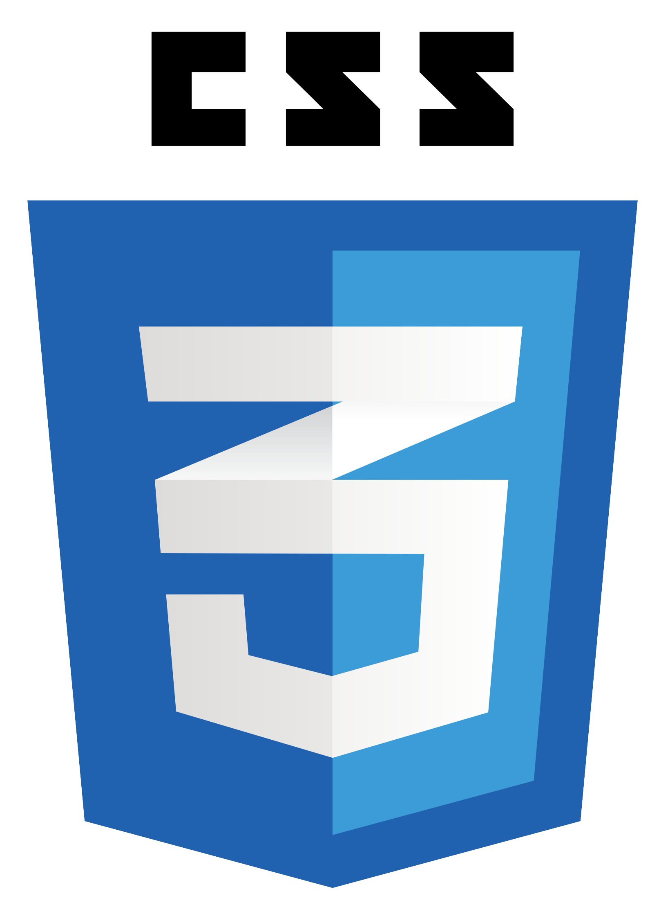
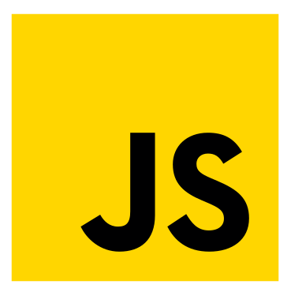
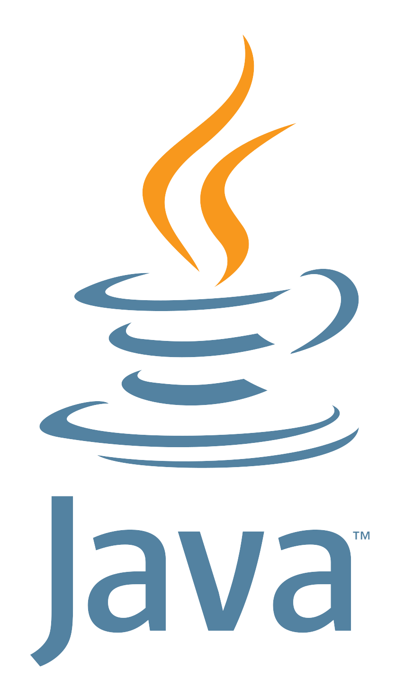
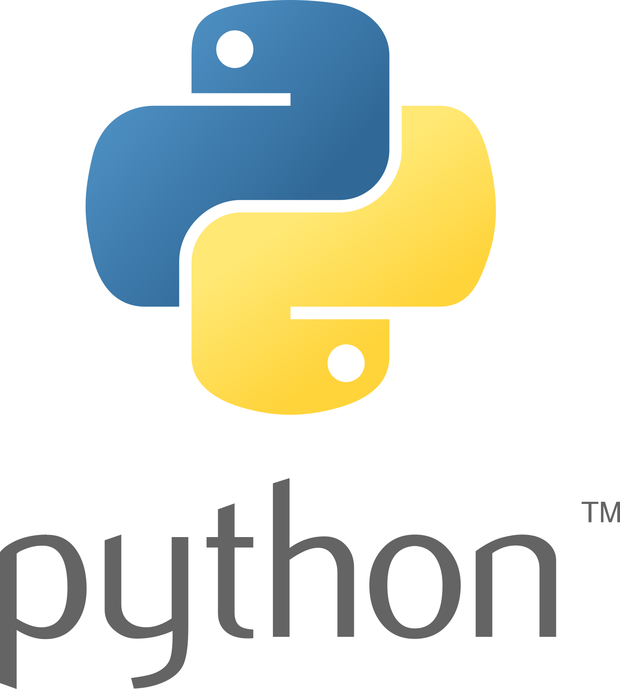
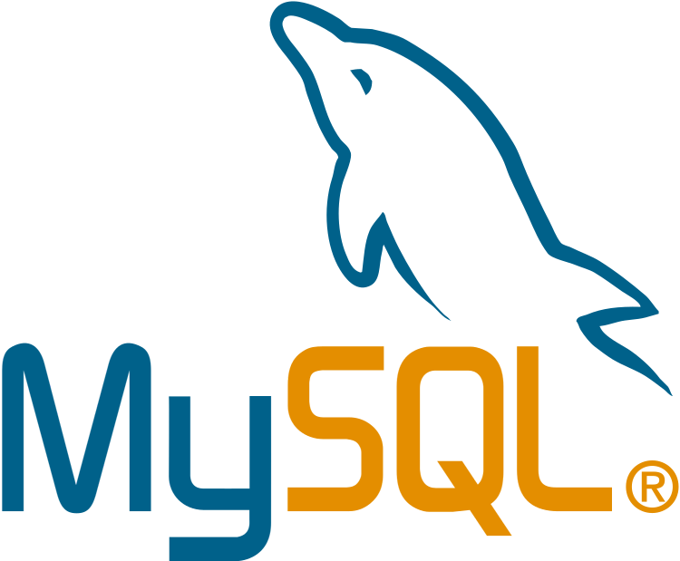

Skills
Habilidades






Soy una persona apasionada por la tecnología y el software. Me encuentro en constante aprendizaje y busco integrarme a un entorno laboral donde pueda seguir creciendo profesionalmente, aportar mis conocimientos y adquirir experiencia real. Disfruto asumir retos, aprender nuevas herramientas y trabajar en equipo para construir soluciones funcionales y creativas.
Escuela Nacional Preparatoria | 2019 - 2021
Durante el bachillerato, cursé una formación técnica en computación, donde adquirí habilidades prácticas en áreas como bases de datos, programación y sistemas operativos. Aunque no obtuve el título técnico, esta formación complementó mi preparación académica y técnica.
Universidad Nacional Autonoma de México | 2022 - 2026
Actualmente curso la Licenciatura en Informática, donde he desarrollado conocimientos en gestión de proyectos, metodologías ágiles y análisis de requerimientos. A la par, he fortalecido habilidades técnicas en desarrollo web, bases de datos y programación orientada a objetos.
Aunque aún no he ocupado un puesto formal, he desarrollado diversos proyectos personales que me han permitido practicar y fortalecer mis habilidades técnicas. Cuento con experiencia en varios lenguajes de programación como Java, Python, JS, C, PHP, entre otros. A través de estos proyectos, he trabajado en el diseño de interfaces, lógica de programación, automatización de tareas y desarrollo de aplicaciones web básicas.
Comprometido con seguir aprendiendo y creciendo profesionalmente en entornos dinámicos, donde pueda aplicar mis habilidades y contribuir al desarrollo de soluciones innovadoras.





Dominio sólido de HTML, CSS, JavaScript y preprocesadores como Sass. Capacidad para crear sitios modernos y funcionales siguiendo las tendencias actuales de diseño web.
Creación de interfaces que se adaptan a distintos dispositivos, garantizando una experiencia de usuario atractiva y funcional en móviles, tabletas y escritorio.
Experiencia en Java y JavaScript bajo el enfoque orientado a objetos. Conocimiento de estructuras básicas, buenas prácticas y lógica de programación.
Familiaridad con Git, editores como VS Code, y entornos de desarrollo integrados. Experiencia en manejo de herramientas colaborativas como Trello y Notion.
Conocimiento metodologías agiles como SCRUM. Capacidad para integrarse en equipos ágiles y colaborar eficazmente en proyectos iterativos.
Habilidad para documentar procesos, redactar informes y crear contenido claro y conciso, adaptado a distintos públicos.
Mentalidad analítica y orientación a la solución de errores y desafíos técnicos durante el desarrollo de proyectos.
Nivel B1, con capacidad para leer documentación técnica y comunicarse en un entorno profesional básico. En constante mejora.
Me siento cómodo liderando equipos de trabajo, enfocándome en la gestión eficiente de proyectos y motivando a los miembros del equipo a lograr sus objetivos.